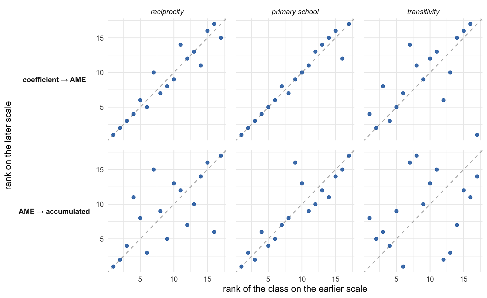
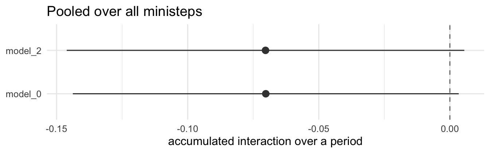
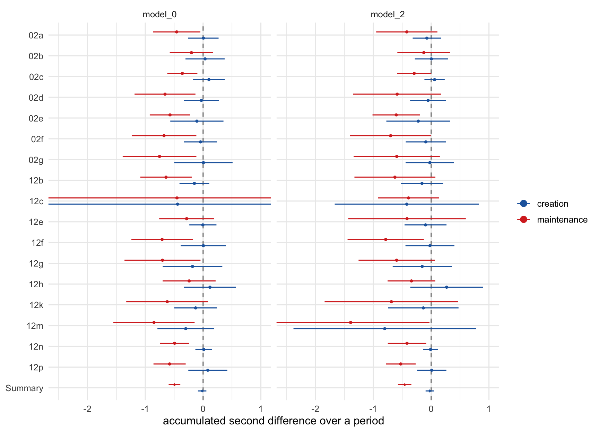

The same quantities as the worked example, applied and pooled
5.1 What was done
The quantities here are the ones the single-network walkthrough builds up: predicted probabilities at a ministep, first and second differences, and the split between tie creation and tie maintenance.
Here they are computed for 17 school classes, drawn from the Dutch early-adolescence study of Knecht (2006). Each class is fitted separately under six specifications, the same post-estimation targets are computed for each, and the per-class results are pooled with a random-effects meta-analysis — so every pooled estimate below rests on k = 17 classes, one observation per class.
The pipeline that produced all of the results, along with the output:
script
produces
scripts/Postestimation.R
per-class predicted probabilities, first and second differences
scripts/meta_analysis.R
the pooled tables and plots shown below
Since the results are included too, you can pick up wherever suits: re-pool from the saved per-class estimates in seconds, recompute those from the fitted models in minutes, or go back to estimation and change the specifications. scripts/README.md has the run order and what each stage costs.
The rest of this chapter walks through what came out.
5.2 The three specifications
The full analysis fits six specifications per class. Three are shown here, chosen so that each pair differs in one thing:
primary school, gender of ego and alter, and their interaction
model 3
density, reciprocity, transitivity
the same as model 2
So model 0 → model 2 adds the covariates to a purely structural model, and model 2 → model 3 removes the reciprocity × transitivity interaction from the full model. Reciprocity appears in all three, which is why it is the effect followed below.
5.3 Meta-analysis of average marginal effects
The walkthrough on single networks ends with average marginal effects: first differences in the probability of a tie, averaged over decision situations. Those are per-opportunity quantities — they describe one ministep.
Here is the AME for reciprocity across the 17 classes, next to the coefficient it came from and to the accumulated effect introduced below:
the estimated coefficient, as reported by siena07;
the average marginal effect (AME), the first difference in the probability of a tie averaged over decision situations — one ministep;
the accumulated effect, the same contrast summed along the model-implied ministep sequence, so it refers to a whole period.
show the code
one <-function(f, eff, lbl) { d <-get(f); d <- d[d$effect == eff, c("model", "est")]names(d)[2] <- lbl; d}sc <-Reduce(function(x, y) merge(x, y, by ="model"),list(one("table_raw_meta.csv", "friendship_recip_eval","coefficient"),one("table_static_meta.csv", "recip_fd","AME"),one("table_accumulated_meta.csv", "recip_fd","accumulated")))sc <- sc[sc$model %in% KEEP, ]sc[, -1] <-round(sc[, -1], 3)rownames(sc) <-NULLsc
model
coefficient
AME
accumulated
model_0
2.149
0.073
0.386
model_2
2.049
0.057
0.302
model_3
1.151
0.042
0.223
The three agree here on which specification gives the strongest reciprocity effect. That is an observation about these data rather than something to count on: the scaling arguments in Chapter 1 say a coefficient and its probability-scale counterparts need not move together, and none of the three is adjusted for whatever its own specification leaves out.
What they are differs. The coefficient is a difference in log-odds within a choice set. The AME is a probability change per decision opportunity, averaged over ministeps that are not themselves observed. The accumulated effect refers to a whole period, but on a cumulative count scale rather than a probability one — Chapter 6 sets out what that scale does and does not support.
What the probability scale does not fix on its own is the size of the choice set. These classes run from 22 to 33 pupils, so the number of alternatives an actor faces varies by about half across the pool, and the classes differ in composition besides. Chapter 2’s point applies here: these probabilities live under a \(1/K\) geometry, so a per-opportunity probability of a given size does not mean quite the same thing in a class of 22 as in one of 33. Moving off the coefficient scale buys a common unit, not automatically a common baseline.
5.4 Why the accumulated effect compares better across rates
The AME answers “how much per decision”. It does not say how much happens over a period, because it does not know how often actors decide — and they do not all decide equally often. The rate parameter varies a lot between these classes:
show the code
raw <-readRDS(file.path(RES, "estimation_results.rds"))$coefsp <-readRDS(file.path(RES, "postest_all_df.rds"))pick <-function(d, ...) { x <-subset(d, ...); x[, c("class_id", "est")] }rt <-pick(raw, effect =="friendship_rate1"& model =="model_2")so <-pick(p, estimand =="static"& condition =="pooled"& model =="model_2"& effect =="recip_fd")pp <-pick(p, estimand =="accumulated"& condition =="pooled"& model =="model_2"& effect =="recip_fd")names(rt)[2] <-"opportunities"; names(so)[2] <-"AME"names(pp)[2] <-"accumulated"cl <-merge(merge(rt, so), pp)round(range(cl$opportunities), 2)
[1] 3.43 11.35
That matters, because the same effect per decision does not mean the same effect over a period. Two classes make the point:
Class 12c has roughly three times the reciprocity effect per decision of class 02f, yet less total movement over the period — because its actors get about a third as many opportunities. On the per-opportunity scale 12c looks like the stronger case; on the period scale it is the weaker one.
Across all 17 classes the two scales rank the classes differently:
This is the specific sense in which the accumulated effect compares better: it carries the rate, so it says what a mechanism does in a setting rather than what it does per opportunity. Two networks running at different tempos can have identical AMEs and quite different consequences over a period.
The price is interpretability. The accumulated effect is a sum, so it grows with the number of opportunities and is not bounded the way a proportion is — a count of extra ties created and dissolutions avoided rather than a probability. That makes ratios between specifications readable and levels on their own much less so, and it means the number should not be set against a between-wave difference in tie proportions. Chapter 6 takes up those limits; the point here is only that when opportunity rates differ, this is the scale on which the comparison can be made at all.
5.5 Does the choice of scale change the picture?
Mostly not, for the step from coefficient to probability. Each point below is one class, placed by its rank on two scales; the diagonal is “no reordering at all”.
show the code
raw <-readRDS(file.path(RES, "estimation_results.rds"))$coefsp <-readRDS(file.path(RES, "postest_all_df.rds"))## Effect keys, paired with their raw-coefficient names and a readable label.## The order here is the order the panels appear in, and the prose follows it:## the two effects that behave alike first, the exception last.eff_map <-data.frame(key =c("recip_fd", "X_primary", "transTrip1_fd"),coefn =c("friendship_recip_eval", "friendship_X_primary_eval","friendship_transTrip1_eval"),label =c("reciprocity", "primary school", "transitivity"))ranks <-do.call(rbind, lapply(seq_len(nrow(eff_map)), function(i) { g <-function(d, ...) { x <-subset(d, ...); x[, c("class_id", "est")] } r <-g(raw, effect == eff_map$coefn[i] & model =="model_2") s <-g(p, estimand =="static"& condition =="pooled"& effect == eff_map$key[i] & model =="model_2") a <-g(p, estimand =="accumulated"& condition =="pooled"& effect == eff_map$key[i] & model =="model_2")names(r)[2] <-"coef"; names(s)[2] <-"ame"; names(a)[2] <-"acc" m <-merge(merge(r, s), a)rbind(data.frame(effect = eff_map$label[i], step ="coefficient → AME",x =rank(m$coef), y =rank(m$ame)),data.frame(effect = eff_map$label[i], step ="AME → accumulated",x =rank(m$ame), y =rank(m$acc)))}))## Explicit level order for both facet dimensions. Without this, facet_grid## sorts alphabetically and puts "AME -> accumulated" above "coefficient ->## AME", which is the reverse of the order the text reads them in.ranks$step <-factor(ranks$step,levels =c("coefficient → AME","AME → accumulated"))ranks$effect <-factor(ranks$effect, levels = eff_map$label)ggplot(ranks, aes(x, y)) +geom_abline(slope =1, intercept =0, colour ="grey70", linetype ="dashed") +geom_point(colour ="#2166ac", size =1.8, alpha =0.85) +facet_grid(step ~ effect, switch ="y") +labs(x ="rank of the class on the earlier scale",y ="rank on the later scale") +theme(strip.placement ="outside",strip.text.y.left =element_text(angle =0, face ="bold"),strip.text.x =element_text(face ="italic"),panel.spacing =unit(0.9, "lines"))

Rows are the change of scale (bold, on the left), columns the effect (italic, on top).
Top row — coefficient to AME. Rescaling a coefficient into a probability leaves the classes in almost the same order for reciprocity and for the primary-school effect: whatever the coefficient told you about which class has the strongest effect, the probability tells you too. Transitivity is the exception.
Bottom row — AME to accumulated. This is the step just made, and here the classes do reorder, because the question changes from what a mechanism does per decision to what it does over a period.
5.5.1 Which AME?
Both scales above pool tie creation and tie maintenance into one number. Chapters 2 to 4 kept them apart, so it is worth asking what the pooling costs here. The same rank correlation, computed against the creation-only and maintenance-only averages:
show the code
margin_rho <-do.call(rbind, lapply(seq_len(nrow(eff_map)), function(i) { r <-subset(raw, effect == eff_map$coefn[i] & model =="model_2")[, c("class_id", "est")] rho <-function(cond, st) { d <-subset(p, estimand =="static"& condition == cond & effect == eff_map$key[i] & model =="model_2")if (!is.na(st)) d <- d[d$stratum == st, ] z <-merge(r, d[, c("class_id", "est")], by ="class_id")round(cor(z$est.x, z$est.y, method ="spearman"), 2) }data.frame(effect = eff_map$label[i],pooled =rho("pooled", NA),creation =rho("bydensity", 1),maintenance =rho("bydensity", -1))}))rownames(margin_rho) <-NULLmargin_rho
effect
pooled
creation
maintenance
reciprocity
0.95
0.93
0.56
primary school
0.97
0.96
0.88
transitivity
0.50
0.43
0.27
Two things follow, and one does not.
The pooled column and the creation column are nearly identical. That is what a sparse network implies — almost every alternative an actor faces is a tie that could be created — so the pooled average is a creation average with a little maintenance mixed in. Where this chapter says “the AME”, read “mostly the creation AME”.
The maintenance column is where the coefficient stops predicting the ordering. Reciprocity falls from 0.95 to 0.56 and the primary-school effect from 0.97 to 0.88. So the reassuring reading of the top row holds for the decision to make a tie and not for the decision to keep one: which class has the strongest maintenance effect is not something its coefficient reliably tells you. That is the same lesson as the creation/maintenance split in the earlier chapters, arriving one level up — about the ordering of classes rather than the size of an effect.
Transitivity is not explained away by either column. Its low correlation is not an artefact of mixing margins: it is 0.43 on creation and 0.27 on maintenance, low either way. Transitivity really is the effect whose class ordering changes when you move off the coefficient scale.
5.6 The result: a trade-off that only appears when keeping ties
With the scale settled, a substantive question. Do reciprocity and transitivity reinforce each other, or substitute for one another? That is a second difference — how much the effect of one more two-path changes when a tie goes from unreciprocated to reciprocated — and everything below is on the accumulated scale.
Start with it as it would normally be reported: one estimate per specification, averaged over every ministep of the period.
show the code
pool <-get("table_accumulated_meta.csv")pool <- pool[pool$effect =="interaction_sd"& pool$model %in% KEEP,c("model", "est", "ci_low", "ci_high")]ggplot(pool, aes(est, model, xmin = ci_low, xmax = ci_high)) +geom_vline(xintercept =0, linetype ="dashed", colour ="grey50") +geom_pointrange(colour ="grey25") +labs(x ="accumulated interaction over a period", y =NULL,title ="Pooled over all ministeps")

Small, negative, and easy to pass over. Reciprocity and transitivity look like mild substitutes.
Now split the same estimate by the kind of decision the actor was facing, on the same axis:
ctx[, 3:5] <-round(ctx[, 3:5], 3)ctx <- ctx[order(ctx$model, ctx$context), ]rownames(ctx) <-NULLctx # model 3 has no interaction to report
model
context
est
ci_low
ci_high
model_0
creation
-0.016
-0.090
0.057
model_0
maintenance
-0.495
-0.596
-0.394
model_2
creation
-0.025
-0.096
0.047
model_2
maintenance
-0.458
-0.575
-0.342
The pooled point is not a compromise between the two — it sits almost on top of the creation value, because creation decisions vastly outnumber maintenance ones and dominate the average.
The pooled estimates hide how much the classes differ. All 17 of them, with the meta-analytic summary at the bottom:
show the code
per <-readRDS(file.path(RES, "postest_all_df.rds"))per <- per[per$estimand =="accumulated"& per$condition =="bydensity"& per$effect =="interaction_sd"& per$model %in% KEEP & per$stratum !=0, ]per$context <-ifelse(per$stratum >0, "creation", "maintenance")per$ci_low <- per$est -1.96* per$seper$ci_high <- per$est +1.96* per$sesumm <- ctxsumm$class_id <-"Summary"fig <-rbind(per[, c("class_id", "model", "context", "est", "ci_low", "ci_high")], summ[, c("class_id", "model", "context", "est", "ci_low", "ci_high")])fig$class_id <-factor(fig$class_id,levels =c("Summary", sort(unique(per$class_id),decreasing =TRUE)))fig$context <-factor(fig$context, levels =c("creation", "maintenance"))ggplot(fig, aes(est, class_id, xmin = ci_low, xmax = ci_high, colour = context,shape = class_id =="Summary")) +geom_vline(xintercept =0, linetype ="dashed", colour ="grey50") +geom_pointrange(position =position_dodge(width =0.6), fatten =1.6) +facet_wrap(~ model) +scale_colour_manual(values =c(creation ="#2166ac",maintenance ="#d73027")) +scale_shape_manual(values =c(`FALSE`=16, `TRUE`=18), guide ="none") +## a few single-class intervals run past +/- 3; clipped so the rest is legiblecoord_cartesian(xlim =c(-2.5, 1)) +labs(x ="accumulated second difference over a period", y =NULL,colour =NULL)

Individual classes are noisy: most intervals cross zero, which is about what one class of thirty pupils supports, and a few run far past the edges of the plot. No single class would settle the question.
What survives pooling is the ordering. The maintenance estimate is below the creation estimate in 33 of the 34 class-by-specification combinations, and the two summary intervals do not overlap. The result is not driven by a handful of classes; it is a small, consistent difference repeated across all of them, which is the case for pooling in the first place.
Reciprocity and transitivity substitute for one another when an actor decides whether to keep a tie, and do essentially nothing when deciding whether to make one. These are not a strong and a weak version of one finding: one is absent, the other is large. Reported as a single number, the maintenance result disappears entirely.
Equivalent figures for every specification and every effect ship in output/, written by scripts/meta_analysis.R. To do this on your own data, start from Chapter 4, which is the same arc at a size that can be copied.
5.7 In short
The coefficient, the AME and the accumulated effect agree here on direction and respond similarly to the specification — an observation about these data rather than something to rely on in general.
Only the accumulated effect carries the rate, which is what lets it be compared between settings whose actors decide at different frequencies. It is a cumulative count rather than a probability, so it is read through ratios rather than as a between-wave difference.
Splitting by kind of decision changes the substantive conclusion rather than refining it: the reciprocity × transitivity second difference is absent in tie creation and large in tie maintenance.
Knecht, Andrea. 2006. “Networks and Actor Attributes in Early Adolescence [2003/04].” ICS-Codebook no. 61. Utrecht: The Netherlands Research School ICS, Department of Sociology, University of Utrecht.